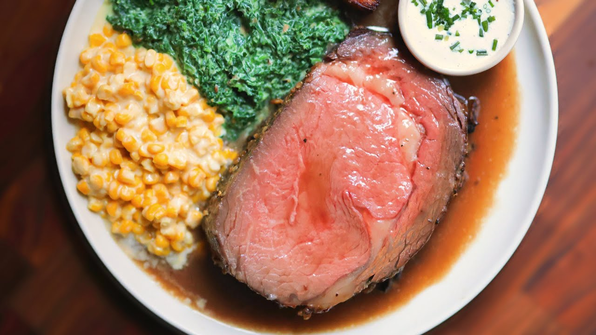

Prime Rib

Description
Prime rib, also known as a standing rib roast, is a cut of beef from the primal rib that consists of anywhere from two to seven ribs. When cooked properly and served medium-rare, this cut of meat is perfect for any holiday or special occasion!
Ingredients
- 1 prime rib roast, bone-in
- 2 tablespoons Montreal steak seasoning
- 2 tablespoons mayo
- 1 tablespoon mustard
- 1 tablespoon prepared horseradish
- 1 tablespoon Worcestershire sauce
- 2 garlic cloves, chopped
- 1 teaspoon fresh rosemary, chopped
- 1 teaspoon fresh thyme, chopped
Equipment
- Baking sheet with a wire rack
- Probe thermometer
Directions
- Place the prime rib on a baking sheet with a wire rack.
- Season the prime rib with Montreal steak seasoning.
- Let the prime rib dry brine uncovered in the refrigerator for at least 12 hours.
- Combine mayo, mustard, horseradish, Worcestershire sauce, garlic, rosemary, and thyme in a bowl.
- Once the prime rib is dry-brined, spread the horseradish mixture onto the prime rib.
- Preheat the oven to 250°F.
- Once preheated, roast the prime rib until it reaches an internal temperature of 120°F.
- Once the internal temperature reaches 120°F, turn the oven to 500°F and sear the prime rib for 10 minutes.
- Take the prime rib out and allow it to rest for at least 30 minutes.
- Once rested, slice, serve, and enjoy!